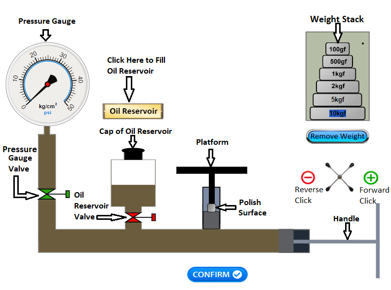
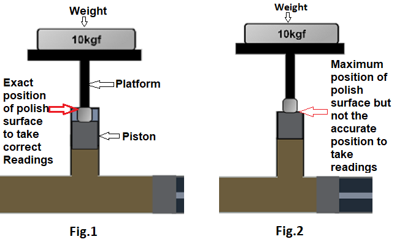

Answer all the questions and click on "Submit Test" button.
Configuration
Select meter gauge and cylinder Piston Area.
Calculate radius of cylinder as its area is known. After submitting the given answer is wrong for 3 attempts it will show the formula, if the given answer is wrong it will show the correct answer.
Mimic

Open the Cap of Oil Reservoir.
Click on "Oil Reservoir" button and fill the reservoir with oil.
Click on oil reservoir valve (it will change its color to green), so that oil will get spread in the cylinder.
Click on metergauge valve and spread the oil throughout the cylinder and metergauge.
Once the oil is spread in the cylinder click on plus sign ("Forward click") to move the handle in clockwise direction, and to generate the pressure so that the handle will move in inner direction.
After creating pressure and you reach its maximum position excess air will get released. Then click on minus sign ("Reverse click") this will release the pressure so that the handle will move in outer direction. To remove excess air from the oil and cylinder repeat this process four times and close the cap of oil reservoir by clicking on cap.
Click on minus sign and reach its initial position. Once you reach the minimum limit, oil reservoir valve will get closed (it will change its color to red).
Place the weights (by clicking weights from the weight stack) on platform and click on plus sign to generate the pressure, when the pressure is generated, platform will get uplifted. You can uplift the platform till it reaches to its correct reading position (refer Fig.1 and Fig.2) and then click on confirm button to add the record in table.

Once you add a values in the table then release the pressure by clicking on minus sign and repeat step 8 for more readings. You can add or remove weights from the platform for different readings. To remove weight from the platform click on "Remove weight" button.
It is mandatory to perform this experiment for minimum and maximum weight i.e. 0 kg and maximum as per meter selection.
After you take 5 readings Show graph button will be enabled.
Once you click on show graph, graph will be displayed. Further the process can be followed as per instructions.
Calibration
Calculate zero error (minimum value) upto two decimals and click on submit (Formula: Actual Reading - Observed Reading).
Similarly calculate span error (maximum value) upto two decimals and click on submit (Formula: Actual Reading - Observed Reading).
Observe the graph and then adjust zero by clicking "plus" and "minus" buttons.
Once zero error is calibrated then calibrate span error with same process as mentioned in step 3.
When span error is calibrated it disturbs zero. Again adjust zero and follow the process as mentioned in step 3.
After adjusting zero and span error click on "CALIBRATION WITH METER" button to move on next level.
Calibration With Pressure Gauge
Follow the given Instructions and complete the process.
After completion of process click on "Fault Finding" button to move on next level.
Fault Finding
Observe the shown table and select the fault accordingly.
After selecting the correct fault Result will be displayed.

 COEP Technological University
COEP Technological University